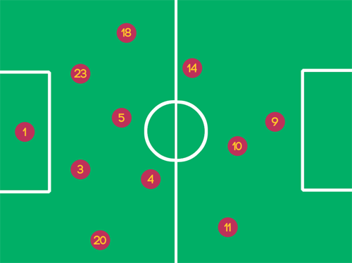

TACTICS
ABOUT 17-18 SEASON
Edited by Me
We will see Valverde’s 3 tactics with 3 formations.
2017~
In 2017-2018 FC Barcelona started without Coutinho(06.01.18 joined), O.Dembele(injured). So they can’t maintain the 433 system wich was very succesful at 2016-2017 season. They removed one forward and put it into midfield. This is the reason why Valverde creates 442 system.

Actually it's not 442 it's 4132. Valverde’s 442 is way different to 442 of D.Simeone. Because Barcelona can use Busquets in the midfield and Barcelona isn't used to use flat 4 midfield.
In the midfield 3 midfielder make balance and other midfielder(15) Paulinho can move more aggressive. This movement can create more chances when Messi is defended. Let’s see this tactics when it’s used at El Clasico(23.12.17).
If it was other league match then Iniesta(8) can move forward but he didn’t because Real Madrid is strong enough to attack Barcelona. So he chosed to take balance in the midfield. But Paulinho can. Paulinho tried to move forward and it occurred many chances to Barcelona.
In this match Messi was man marked by Kovacic. So Messi wasn’t able to get movements, in this situation Paulinho made the solution in the mid third area. If Barcelona use 433 system then they can’t have this movements in midfield. The 442 system was efficient in this aspect.
2018~

After 2018 now Dembele returend from his injury and Coutinho came to Barcelona. It means Valverde can now use third option in attacking area. And Coutinho was perfect choice when Iniesta was exhausted by many matches so he wasn’t able to play.
When Copa del Rey Final against Sevilla(21.04.18) Barcelona used 4231 formation with right winger Coutinho.
The result was 5:0 victory. Messi was easy to make chances to Coutinho right side, to Suarez left side. Even in the midfield Iniesta can create chances and make balance. You’ll see the difference between Iniesta’s advanced position in this match and El Clasico’s position.
At the end of the season classic 433 system revived by O.Dembele.
When 30, April in Estadio de Riazor Valverde used LOL three tops and Coutinho instead of Iniesta. Also he picks Semedo.
These points show many things. First Valverde wants to use 433 system as a highly attacking system. In this match Barcelona scored 5 times but they allowed 2 goals Sergi Roberto showed his impressive defending ability than Semedo many times so he thinks Semedo is a attacking option in contrast to Sergi.
After Sociedad match finally the season ended with two grand tropies. Now we can expect our player’s WC match and exciting transfer market. Who will come, who will leave.
Besides everything this is FC Barcelona